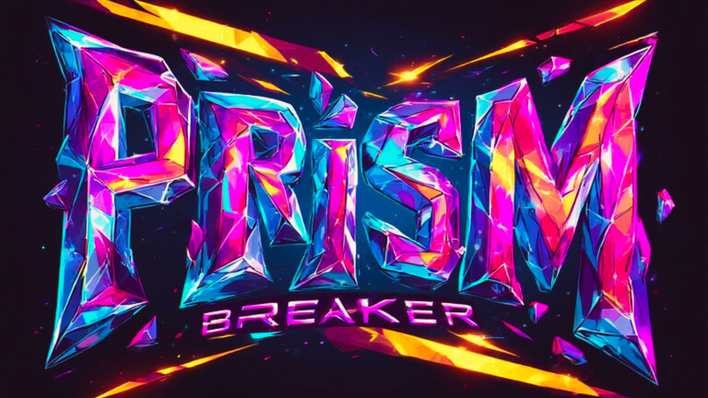

Prism Breaker
A kart racer built inside the skull of a dead god. Azathoth as finish line.
Concept
Culling Circuit is a cosmic horror kart racing concept blending the energy of Crash Team Racing, the brutality of Mortal Kombat, and the rhythm of Thumper — set inside a mythology where Azathoth's dreaming is the track itself.
Factions race not for glory but for the right to survive the next cycle of the Outer Gods' attention. Losing means ceasing to exist. Winning means you get to race again.
Worldbuilding
- Cosmological structure built around Lovecraftian mythology — recontextualised for competition
- Multiple distinct factions with competing eschatologies
- Visual language: psychedelic, gothic, non-Euclidean track geometry
- Tone: absurd surface, genuinely unsettling undercurrent